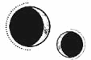

CAPÍTULO 60
Junius 1787
Estar convaleciente era horrible. Helena estaba acostumbrada a que la eficiencia de la sanación resolviera los aspectos más lentos e insoportables de la recuperación, así que verse obligada a aguantar el ritmo natural de su cuerpo le resultó muy molesto.
La mayor parte de la primera semana la pasó aturdida por la medicación, con fiebre por la infección. Cuando recobró la lucidez, encontró a Kaine a su lado. Tenía encima una pila de libros y documentos y los estaba hojeando.
—¿Qué estás haciendo? —le preguntó tras observarlo un rato.
Él levantó la mirada.
—Estudiar anatomía humana para mi futura carrera como sanador —respondió con sequedad.
Helena sabía que la respuesta sincera era que él tendría que convertirse en su sanador cuando el anulitio desapareciese de su sistema. Aun así, le siguió el juego.
—Podemos abrir una consulta los dos juntos, como hicieron mis padres. En lo alto de un acantilado. Así podremos disfrutar de las vistas y ver la marea.
Kaine arqueó una ceja.
—¿Yo tengo algo que decir sobre esa futura vida que tendremos o vas a tomar tú todas las decisiones?
—¿Tienes alguna idea que aportar?
Se hizo el silencio.
—La verdad es que no.
Helena dejó escapar el aire poco a poco. Ya podía mover los dedos. Al flexionarlos, se dio cuenta de que tenía la mano derecha vendada y los dedos escayolados, y recordó los últimos momentos en el hospital de campaña.
—Casi se me olvida —dijo—. Creo que descubrí algo en el hospital.
Kaine levantó la mirada.
—¿Te acuerdas de la obsidiana de la que te hablé? Tenía un trozo en el bolsillo cuando llegaron los necrómatas. Creo que… creo que corté una reanimación con ella.
—¿Estás segura?
Entrecerró los ojos mientras trataba de recordar algo más, pero lo único que se le vino a la cabeza fue la luz roja anaranjada y el dolor.
—No del todo, pero pienso que deberíamos probarla otra vez.
—Bueno, tú no te preocupes por eso ahora. —Cerró el libro de golpe y se acercó a cambiar las vendas.
Cuando retiró la tela, Helena notó que recuperaba un poco de movilidad. Levantó la cabeza con ganas de ver algo más. En el centro del pecho, como una costura serrada, se extendía una profunda incisión cosida con hilo negro y alambre de cerclaje. La piel estaba hinchada, teñida en tonos amarillentos, blancos y rosados.
Helena había visto más heridas de las que podía recordar, había sido testigo de cómo los pacientes lloraban por lo que habían sido y en lo que se habían convertido sus cuerpos. Sabía lo que debía decir, las frases de aliento y confianza, que todo se arreglaría, que todo mejoraría con el tiempo.
Pero, al mirar su propia herida, todo eso se le olvidó.
—Por Dios… —exclamó. Dejó caer la cabeza, sintiendo un nudo en la garganta; le había dado tanto miedo que no quería seguir mirándola.
—Se curará. Dale tiempo —dijo Kaine en voz baja mientras buscaba señales de infección.
Después de haber tratado a Lila, sabía que le quedaría cicatriz. Aunque intentara sanarse a sí misma cuando recuperara la resonancia y reorganizara las matrices, el tiempo para evitar marcas era limitado, y el anulitio parecía tener un efecto queloide sobre los tejidos.
Respiró hondo un par de veces.
Tenía suerte de seguir con vida. Unas cuantas cicatrices no eran nada comparadas con las heridas que algunos miembros de la Resistencia tendrían que soportar de por vida. Aunque conservaba todas las extremidades, los dos ojos, las orejas e incluso todos los dientes.
Lo mirase por donde lo mirase, había tenido suerte. ¿Qué importaba una cicatriz? Todo se arreglaría.
Se dio cuenta de que Kaine la estaba observando y se obligó a decir:
—Creo que tus cicatrices son más bonitas que las mías.
—Yo tuve una sanadora mejor.
El anulitio en la sangre de Helena tardó tres semanas en reducirse lo suficiente para que Kaine pudiera usar la resonancia y evaluar su recuperación, aunque aún no estaba preparada para sanar de esa manera.
La resonancia de Helena apenas era un murmullo en sus venas.
Cuando Kaine no estaba, era Davies quien le hacía compañía. Helena notó que tenía la mente cada vez más despejada y que ya podía hacer inventario de lo que la rodeaba.
La decoración de la habitación era mínima, casi inexistente. Había una cama, un armario hasta el techo, un escritorio y una silla. El falcón Matias había tenido unos aposentos más confortables, y eso que era un monje asceta.
Cuando se lo comentó en tono de broma a Kaine, este torció el gesto.
—Es mi habitación.
Helena se quedó callada y miró a su alrededor con cierta vergüenza.
—Vaya. Pensaba que en una casa de campo habría habitaciones más grandes.
El chico asintió.
—Las hay más grandes. Me mudé aquí porque estaba más cerca de la habitación de mi madre, y después nunca me fui.
—Siento haberte traído de vuelta —dijo Helena.
Kaine negó con la cabeza.
—No ha sido por ti. Volví para echarles un ojo a los criados.
Helena dudó, pero tenía que saberlo.
—¿Están todos muertos? —Kaine asintió—. ¿Por qué los…?
El chico apartó la vista y tragó saliva mientras se frotaba las manos.
—Fue justo después. No recuerdo nada. Los oía gritar en mi interior. Encontré sus cuerpos amontonados en un rincón, como si fueran alfombras viejas. Todavía estaban calientes. No pretendía… No me di cuenta de lo que estaba haciendo. Solo quería devolverles la vida.
—Entonces son… ¿ellos?
Kaine sacudió la cabeza.
—No sé qué son. Me gusta pensar que fui capaz de devolverles una parte de su esencia, que por eso me resultó más fácil seguir haciéndolo después, pero lo más probable es que se muestren tal como eran porque yo quiero que lo hagan. Simplemente… no soy capaz de dejarlos marchar.
Cuando por fin Helena pudo usar una almohada, Davies le empezó a traer libros para leer durante las horas en que Kaine no estaba presente. Sentía curiosidad por saber qué tipo de biblioteca había en Puntaférreo, pero, por desgracia, Davies resultó ser analfabeta, o al menos lo era como necrómata. Helena recibía libros de temas muy diversos. Un día, le entregó una enciclopedia de especies de mariposas, seguido de una antología de los primeros escritos de Cetus.
Como «Cetus» había escrito miles de textos y cartas alquímicas a lo largo de varios siglos, los académicos solían agrupar sus obras en distintas colecciones según la temática o la historia que consideraran legítima. Según la edición de la antología, Cetus había nacido en diez países distintos. A veces era rey; en ocasiones, sacerdote; y en algunas cartas se afirmaba que había trabajado con el mismísimo Orion.
En la antología que recibió Helena, Cetus se interesaba por una antigua secta khemiata que sostenía que la resonancia humana era la alquimización de la humanidad y que los alquimistas eran seres ascendentes.
—Parece algo que les gustaría creer a los alquimistas —comentó Kaine por la noche, cuando ella le habló del tema. A él le interesaba más el estado de los pulmones de Helena que las antiguas sectas.
Ella se esforzó por no torcer el gesto cuando le retiró las vendas.
—¿Los inmarcesibles tienen religión?
—El Sumo Nigromante es nuestro dios —repuso Kaine, que extendió su resonancia por las costillas de Helena, hasta el punto donde algunas de ellas se habían fracturado—. Nuestras vidas están dedicadas al servicio de su poder infinito.
—Si tan poderoso es, ¿por qué no da la cara y gana la guerra?
Kaine levantó la vista un instante.
—Es un dios. Y, como habrás notado, el modus operandi de los dioses suele ser que los humanos mueran en su nombre. Aunque Sol podría destruir a los nigromantes si tanto los odia, por algún motivo, siempre son los Holdfast los que se encargan de ello. Al final, uno se pregunta si le importa de verdad.
Desde que le contó la verdad sobre Orion y por qué los Holdfast se habían convertido en principados, Kaine parecía pensar que, si criticaba lo suficiente a la Llama Eterna, Helena acabaría rindiéndose con la Resistencia.
Ella soltó un suspiro que le provocó dolor en los pulmones, y Kaine pareció olvidarse de la conversación durante unos minutos.
—Desde que Holdfast ha vuelto a la batalla, Morrough se ha mantenido alejado del frente —dijo entonces.
—Pero, si le tiene tanto miedo a Luc, ¿por qué no lo mató cuando lo capturó?
Kaine negó con la cabeza.
—Creo que no quiere matarlo. Las órdenes siempre han sido capturarlo con vida. Antes creía que era porque Morrough temía que alguien más le arrebatara el mérito del golpe final, pero, después de aquella captura, creo que la razón es otra. Holdfast ha combatido en el frente durante los últimos seis años. ¿De verdad crees que, si Morrough lo quisiera muerto, no habría encontrado ya alguna manera de matarlo?
Cuatro semanas después del bombardeo, Helena logró levantarse sin sentir que se desmoronaba. Había recuperado apenas un ápice de su resonancia y ya no iba vendada, pero todavía le quedaba el alambre, ya que su esternón seguía muy delicado. Antes de colocarse el corsé en el pecho, se sentó frente al espejo para ver la cicatriz que se extendía entre sus pechos.
No había belleza alguna en esa marca.
Siempre había admirado cómo Lila lucía sus cicatrices con orgullo, cómo bromeaba y les ponía nombre. Ahora comprendía lo difícil que era estar orgullosa de ellas.
Esa herida jamás desaparecería. En un momento íntimo, sería lo único que estuviera a la vista. Tras contemplarla bajo la fría luz del día, Helena no pudo evitar pensar que tal vez llegara el día en que Kaine no querría a alguien con una marca tan pronunciada. Hasta él querría olvidarse de todo en algún momento.
Sin embargo, le resultaría imposible si esa cicatriz permanecía con ella.
Él se encontraba ordenando los frascos de medicina en la mesa, pero Helena sabía que la estaba mirando por el rabillo del ojo.
—Se atenuará —comentó Helena rápidamente.
Le ardía el rostro. Soltó el espejo y se llevó la mano a la cicatriz para taparla. Le ocupaba toda la mano.
—Cuando me ponga mejor, la trataré todos los días para que… se difumine un poco más —añadió.
Tocó con la mano una melladura en el hueso, justo donde se había negado a regenerarse. Podría introducir una placa de titanio para reforzar el hueso, pero, con su repertorio, tal vez aquello interfiriera en su trabajo. Uno de los motivos por los que los alquimistas empleaban el titanio en la medicina era porque había pocos que tuvieran resonancia titánica.
Le tembló la barbilla.
—No será siempre así.
Kaine dejó un frasco sobre la mesa. Sus ojos plateados la miraron con determinación, como si fuera un rayo de luz atravesando una lupa. De repente, solo tenía ojos para ella. Dio un paso al frente y, con suavidad, pero también firmeza, le apartó la mano del pecho.
Helena sabía que él había visto esa cicatriz más veces que ella misma, y en un estado mucho peor que el actual, pero detestaba que la mirase.
—¿Así es como ves tú mis cicatrices? —preguntó al cabo de unos segundos—. Cuando me miras, ¿es lo único en lo que te fijas?
Ella torció el gesto.
—No.
—Bien. —La miró a los ojos—. Porque yo tampoco te veo así. Eres mía. —Le soltó la muñeca y levantó la mano hasta que las yemas de sus dedos dibujaron toda la cicatriz, que quedó oculta bajo la palma de su mano. Helena sintió el calor de su piel, que subió hasta la curva de su cuello—. Lo eres. Da igual lo que te pase, seguirás siendo mía.
Helena apenas había visto algunas partes de la casa, en Puntaférreo. Dieron paseos por los pasillos tenuemente iluminados mientras se acostumbraba al dolor que sentía en el pecho cada vez que se movía. Cuando respiraba hondo, tenía la sensación de que su esternón iba a romperse. La casa estaba decorada en un estilo anticuado y recargado que hacía mucho que ya no se usaba en la ciudad. Había detalles de hierro forjado en todos los rincones, hasta los suelos eran un entramado metálico. Tenía una belleza melancólica.
En el suelo de mármol del vestíbulo había un mosaico de un dragón uróboro, dispuesto de forma meticulosa para mostrar su grandeza y su violencia a partes iguales. Helena lo analizó desde el rellano del piso superior.
Los Ferron debieron de sentirse muy orgullosos al construir esa casa. Debieron de pensar que, de algún modo, habían derrotado a los dioses.
Aquella noche, Kaine durmió con ella en su cama. Él había pasado las noches sentado en una silla a su lado, sosteniéndole la mano y haciendo caso omiso a las veces que le sugirió que habría otras camas en la casa.
Esta vez, él cedió.
Helena se acurrucó en sus brazos; había echado de menos el calor y el consuelo que le brindaba su cuerpo.
En unos días, volvería a la rutina. Ya había reposado más tiempo del que hubiera querido, pero sabía que el viaje de regreso sería duro y que no serviría de nada presentarse en el Cuartel General si no se recuperaba completamente.
Todo sería distinto. El bombardeo había diezmado la Resistencia y había agotado sus suministros. Todo lo que habían ganado en el último año se había perdido, y Morrough sabía que había un espía entre sus filas. Los inmarcesibles estaban buscando a Kaine, querían sacarlo de su escondite, pero eso no frenaría a Ilva o a Crowther cuando decidieran obligarlo a hacer lo que ellos quisieran.
Tenía que volver.
Sostuvo a Kaine contra su pecho y sintió cómo el latido de su corazón vibraba en todo su torso.
Lo atrajo hacia sí, ladeó la cabeza y le dio un beso. Kaine levantó la mano para acariciarle la mejilla, pero se detuvo. Helena sabía lo que iba a decirle: que todavía se estaba recuperando. Sin embargo, estaba harta de estar convaleciente, de tener tan poco tiempo y no dedicarlo a lo que realmente deseaba.
—Si tenemos cuidado, no me pasará nada —le aseguró sin apartarse—. Por favor. Quiero estar contigo antes de marcharme.
Kaine fue muy cuidadoso. Lo hicieron despacio, suave. La acarició como si fuera de cristal. Cuando la penetró, Helena sostuvo su rostro entre las manos hasta que sus frentes se rozaron; los dedos le temblaban.
«Te quiero».
Tenía esas palabras en la punta de la lengua, pero vaciló durante un instante y las contuvo.
Había una parte de ella que creía que, si pronunciaba esas palabras, acabarían condenados. Si quedaba algo importante por decir, siempre habría un mañana.
En lugar de eso, le besó.
«Te quiero». Se lo dijo en la forma en que lo atraía hacia sí, cuando se encontraban sus bocas, en cómo sus manos le acariciaban la piel, cartografiándolo, memorizando cada detalle que componía su ser, recorriendo sus cicatrices con los dedos.
«Te quiero».
«Te quiero».
Se lo dijo en la forma en la que se dejaba llevar para que él la sostuviera. Con cada latido de su corazón. «Te quiero. Siempre te querré. Siempre cuidaré de ti».
Estaba anocheciendo cuando se marchó. Helena salió al exterior por primera vez. Puntaférreo era una mansión enorme que se curvaba hacia dentro y tenía un patio cerrado con un jardín desbordante en el centro.
Allí se encontraba Amaris, impaciente, con las alas desplegadas y en movimiento.
Kaine la llevó en volandas, y el corsé absorbió la presión de su peso. Cuando él se colocó a su espalda, Helena miró la casa. Bajo el resplandor del verano, le parecía un dragón descomunal en hibernación, enroscado hacia dentro, con los chapiteles como si fueran púas. La fachada frontal estaba cubierta casi por completo de rosas trepaderas, y Davies y un criado anciano, que probablemente fuese el mayordomo, observaban todo desde lo alto de un tramo de escalones de piedra.
Cuando Amaris despegó, Helena sintió como si le dieran un puñetazo en las costillas. Se dobló sobre sí misma y se le escapó un grito ahogado de dolor. Kaine se puso en tensión y estuvo a punto de hacer regresar a Amaris, pero ella le agarró la pierna.
—Estoy bien.
Estuvieron volando durante mucho más tiempo del que Helena había volado jamás.
Amaris se dirigía hacia las montañas, intentando vencer la salida de la luna. Estaba tan cerca de la latencia que Lumitia era una medialuna que no alumbraba demasiado. Aterrizaron en la azotea de un edificio que estaba peligrosamente cerca del Cuartel General. Cuando Helena miró hacia al sur, comprendió por qué.
Habían levantado un muro para demarcar el territorio de la Resistencia. Ocupaba más de la mitad de la isla. Al otro lado, vio el tajo que había diseccionado la ciudad, ahí donde había estallado la bomba y los edificios se habían desplomado. El centro de la isla era un cráter.
—¿Tanto hemos perdido?
—No, pero no tenéis ejército para defender más territorio —respondió Kaine con gesto sombrío. Acto seguido, se bajó y la ayudó a desmontar del lomo de Amaris.
El dolor le provocaba náuseas y tenía que esforzarse para respirar; le apretó la mano a Kaine. Aun así, no fue capaz de despedirse. Cada vez le daba más miedo que aquello estuviera llegando a su fin. Sentía que el final estaba cerca.
—Ten cuidado —fue lo único que pudo decir.
—Helena, por favor… —Se le rompió la voz de tal manera que ella se detuvo en seco y se giró. Kaine la tomó por los hombros.
Sabía lo que le iba a pedir, lo leía en sus ojos: «Huye y no vuelvas».
Pero él también sabía que no lo haría, así que tragó saliva, incapaz de mirarla a los ojos.
—No dejes que te hagan daño otra vez —dijo en su lugar—. No…
Helena se puso de puntillas y lo hizo callar con un beso.
—Ten cuidado —susurró—. No mueras.
Cuando Helena apareció en la puerta con ropa de chico e incapaz de respirar bien, la recibieron con más cautela que alegría. La tuvieron encerrada en una celda durante una hora, hasta que Crowther apareció para sacarla.
—¿Está seguro? —le preguntó un guardia—. Aparece en la lista de fallecidos de hace un mes.
—Sí, la encontró uno de los grupos disidentes —respondió Crowther—. Sabía que la mandarían de vuelta en algún momento. Dejadla salir.
Helena no sabía si los grupos disidentes dentro de los combatientes de la Resistencia existían realmente, o si era algo que se había inventado Crowther para encubrir todas sus actividades ilícitas. Buena parte de lo que hacía Kaine y también gran parte de la información que obtenía acababa atribuyéndose a esos grupos fantasma.
Crowther parecía no haber dormido en las últimas semanas. Estaba demacrado, tenía los ojos inyectados en sangre y haber tenido que ir para sacar a Helena de la cárcel le resultaba, a todas luces, un incordio.
Helena quería saber todo lo que había pasado desde que desapareció, pero, apenas se abrió la puerta de su celda, Crowther ya se había dado la vuelta.
—Ve al hospital. Pace está de servicio. Mañana hablamos —le espetó por encima del hombro.
La enfermera Pace se echó a llorar en cuanto la vio.
—¡Estás viva! Debería haber ido yo. Cuando me enteré de que te enviaron allí, yo no…
—Me alegro de que no lo hicieras —repuso Helena. Estaba agotada por el vuelo y el regreso. Sentía una punzada de dolor en el pecho. Se llevó la mano contra el esternón para intentar aliviar la presión.
Pace la condujo a un sitio cerrado por cortinas.
—¿Cómo es posible que hayas sobrevivido?
Helena repitió la excusa vaga de Crowther.
—La verdad es que no lo recuerdo. Nos encontrábamos en el hospital cuando se produjo otra explosión. Cuando desperté, no sé muy bien dónde estaba. Me operaron y me dejaron sola para que me recuperara.
—Déjame ver.
De haber sido al revés, Helena habría hecho lo mismo, así que permitió que Pace le retirara la ropa y el corsé poco a poco, dejando al descubierto la cicatriz que le cruzaba el pecho.
—Hala. —A Pace le temblaba la mano, pero inspeccionó la cicatriz con sumo cuidado—. Está… muy bien hecho.
Era evidente que esperaba algún tipo de cirugía más chapucera, con cordel y cuchillos de cocina.
—Sea quien sea tu cirujano, deberíamos pedirle que venga a trabajar aquí.
—No llegué a ver quién era —replicó Helena—. Estoy mejor, pero mi resonancia sigue siendo inestable.
Pace intentó sonreír, pero solo consiguió forzar una mueca.
—Por suerte, los quelantes son de las pocas cosas que todavía nos quedan.
—¿Cómo de mal estamos? —preguntó Helena.
Pace no dejó de moverse mientras seguía examinándola y le preparaba el brazo para colocarle una vía intravenosa.
—Solo sé lo que escucho de pasada.
—¿Cómo dice la gente que estamos?
Pace negó con la cabeza.
—De los soldados que nos quedan, más de un tercio sigue mostrando síntomas de envenenamiento por anulitio. El viento ha cambiado de dirección, así que ya no cae polvo, pero hasta las partes de la isla que están intactas corren peligro. Al menos hasta que llueva.
—Me han dicho que Althorne ha muerto.
—E Ilva.
—¿Qué? —Helena miró a Pace conmocionada.
—Hace poco más de una semana. Su corazón no aguantó el estrés. Luc está desconsolado. Deberías ir a ver a Lila mañana. Se quedó destrozada cuando se enteró de que aparecías entre los fallecidos.
No mencionó la reacción de Luc al enterarse de la presunta muerte de Helena. A ella se le formó un nudo en la garganta.
—¿Cómo se encuentra?
—Todo sigue su curso. Está bastante sana.
El bombardeo había dañado los cimientos de la isla y los tanques de inundación, y era imposible repararlos debido al riesgo de exposición al anulitio. La Resistencia también había perdido a casi todos sus prisioneros, ya que el edificio en el que estaban confinados se había derrumbado. Entre ellos se encontraban los detenidos de Crowther, a los que había movido para evitar que Ivy los capturara. Los daban por muertos, pero nadie podía verificar lo que sucedía en la zona de impacto.
Incluso la ayuda que recibían de Novis era muy difícil de conseguir, y había tantos heridos de gravedad que resultaba imposible evacuar a los pacientes al país vecino. El entusiasmo de la monarquía por enviar recursos y aceptar heridos de Paladia estaba empezando a decaer.
La guerra había dejado de ser una contienda entre dos bandos: ahora era una caída libre de la Resistencia. Sin Althorne e Ilva, el Consejo se reducía a tres personas: Matias y Crowther, con visiones totalmente opuestas, y Luc, que no se fiaba de ninguno de los dos.
Crowther siempre había operado en la sombra, lo que permitía a Ilva ejercer el liderazgo con su respaldo tácito. Ahora que estaba solo, parecía encogerse y retorcerse bajo la mirada escudriñadora de Luc, como una araña fuera de su red que patalea con unas patas demasiado largas.
Una parte de Helena quería dejarlo a su suerte, pero sabía que, cuanto más impotente se sintiera Crowther, más peligro corría Kaine.
Se sentó y lo observó moverse de un lado a otro del despacho, deteniéndose frente a mapas y diagramas plagados de surcos de tinta negra.
—¿Cuánta comunicación has mantenido con… Ferron? —le preguntó, exhausta tras el paseo desde el hospital hasta la Torre.
—Ninguna, salvo para informarme de que seguías viva y volverías cuando tu vida dejara de correr peligro. ¿Por qué?
Helena respiró hondo con dificultad.
—Creo que he descubierto algo. Desde que Wagner… Estuve estudiando el sello y pensando en las distintas energías resonánticas para entender el proceso que emplea Morrough. —Los ojos de Crowther se iluminaron con cautela—. Verás, normalmente, los sellos son elementales o celestiales, es decir, de cinco u ocho puntas. Sin embargo, la piromancia de Luc emplea siete y Wagner dibujó uno de nueve para el ritual. Kaine confirmó que eran nueve, así que empecé a observar las energías desde otra perspectiva. Cuando traté de visualizar cómo funcionaría, no dejaba de pensar en una sensación que tengo a veces en el hospital…
—Marino, ve al grano.
—Cuando un paciente muere, hay un pico de energía que es la inversa a la que usa Morrough para crear a los inmarcesibles. La vitalidad cambia y, durante un instante, la percibo antes de que se disipe.
—Y…
—Antes del bombardeo, descubrí una forma de canalizar esa vitalidad y atraparla dentro de obsidiana. No creí que sirviera de nada, pero, cuando estuve en el hospital de campaña, corté a un necrómata con ella y se derrumbó, como si le hubiera arrancado la reanimación.
Crowther la miró de arriba abajo con interés.
—¿Estás segura?
Helena se removió en el sitio, torciendo el gesto cuando sintió un dolor que le atravesó el torso.
—Bueno, estaba herida, pero estoy bastante segura. Lo he repasado en mi mente una y otra vez. Deberíamos ponerlo a prueba. —Tragó saliva—. Tengo más fragmentos de obsidiana y, cuando recupere mi resonancia, puedo hacer más.
—Tráelos. Veré a quién puedo pasarle la idea. —Le hizo un gesto para que se fuera de allí.
Pero Helena no se movió. No es que esperara algún reconocimiento; simplemente no pensaba permitir que Crowther siguiera explotándola.
—Debes de estar muy ocupado ahora —comentó.
—Así es.
—Te ayudaré, pero quiero algo a cambio.
Crowther arqueó las cejas.
—No me digas… ¿Y de qué se trata?
Sus ojos inyectados en sangre se iluminaron peligrosamente. Helena no se inmutó.
—Quiero hacer un trato. Estás haciendo cosas ilegales y ya no tienes aliados en el Consejo que te cubran las espaldas. Necesitas a alguien. Me ofrezco para ser tu mano en la sombra. Te daré lo que necesites, igual que hacía Ilva. Pero Kaine es mi condición.
La expresión de Crowther se torció en una mueca de desdén.
—Te tienes en muy alta estima, Marino.
Helena esbozó una sonrisa amarga.
—En realidad, no. ¿No es cierto? Tú mismo lo dijiste. Soy excepcional. ¿Por qué, si no, pasasteis tanto tiempo Ilva y tú manipulándome? Siempre dispuestos a aprovechar lo que podía hacer, pero dejando claro que no servía para nada más. Adelante, sustitúyeme si puedes.
Los dedos de Crowther se cerraron en un puño. Entornó los ojos, pero no respondió. Helena sintió que el corazón le latía con fuerza contra el hueso fracturado.
—Has empleado a Kaine más allá de lo razonable. Si yo fuera una sanadora sin importancia, lo habrías matado diez veces en los últimos meses. Te avisé, pero me ignoraste porque sabes que haré lo que sea para salvarle la vida. —La rabia se hizo patente en su rostro—. Pero que él esté dispuesto a hacer lo que sea no significa que tú puedas seguir exigiendo sin más. He hecho lo impensable por la Llama Eterna y he permitido que él sufriera las consecuencias porque ¿qué otra opción teníamos? Sin embargo, después de lo que hemos conseguido, después de lo que él ha hecho, no tenemos nada que lo demuestre. Todo se ha ido al traste. Y no pienso dejar que sigas obligándole a pagar ese precio mientras tú ganas tiempo.
Crowther se quedó callado unos instantes.
—¿Y quieres hacer un trato? ¿Eso es lo que me estás proponiendo? ¿Tu cooperación a cambio de la seguridad de Ferron?
Helena se limitó a asentir. Si Kaine hubiera sabido que había regresado para esto, se habría arrancado el talismán antes de permitirlo. Era evidente que ella estaba aprendiendo; ya no era tan fácil adivinar sus intenciones.
Se hizo un silencio que se vio interrumpido por una carcajada de Crowther.
—Qué inesperado giro de los acontecimientos. —Se levantó sin dejar de reír por lo bajo—. De acuerdo. Sigue mis órdenes y Ferron continuará con vida. Yo no soy Ilva; no me interesa que Ferron muera antes de tiempo por una venganza personal. ¿Por qué negarle a un arma su utilidad, aunque esa arma sea una abominación?
El hombre rodeó su escritorio con una sonrisa escalofriante.
—¿Sabes? A principios de este año, tuve una conversación prácticamente idéntica con Ferron.
Helena se mantuvo impasible y lo miró a los ojos.
—Mientras me seas útil, permitiré que seas tú quien apruebe las misiones de Ferron. Pero, si me desobedeces o me enfadas, me encargaré de…
—Sí, sé muy bien lo que harás —replicó Helena.
Helena tardó una semana más en recuperar por completo su resonancia. En ese tiempo, hizo de conejillo de Indias para Shiseo. Estaban desarrollando un quelante en forma de pastilla, con el objetivo de reducir la demanda exorbitada de suero.
En esa misma semana, un experto en armas le entregó una lanza de obsidiana a un joven ambicioso que quería entrar en la unidad de Luc. Antes de que regresara, los rumores de un arma de efectividad milagrosa habían llegado al Cuartel General.
El experto en armas no reveló sus métodos, aunque tuvo que admitir que había sido Crowther quien le había entregado la obsidiana.
Todo el mundo llegó a la conclusión de que las propiedades de la obsidiana provenían de la piromancia; que la obsidiana debía de estar imbuida de un fuego sagrado y purificador.
La nueva arma aseguró el puesto y la influencia de Crowther, no solo dentro del Consejo, sino también en la Llama Eterna. Cuando por fin Helena estuvo en condiciones de volver al trabajo, le dijeron que, debido a sus heridas, ya no podría incorporarse al pabellón de emergencias, y que quedaba relegada a una tarea menos exigente: cuidados paliativos y ritos de despedida.
Vestía un hábito de tela pesada y negra, lleno de bolsillos ocultos en los que guardaba cristales de obsidiana, y atendía a los pacientes que no tenían salvación. Por mucho que creyera que había visto lo peor del hospital, allí comprendió que siempre había trabajado con los que tenían alguna posibilidad de sobrevivir.
Ahora se sentaba junto a hombres que parecían tener el cuerpo del revés, el corazón fuera, las caras reventadas; a veces quedaba tan poco de ellos que parecía imposible que siguieran con vida. Se aferraban a ella y, a menudo, la confundían con otra persona mientras los atendía como si fuera un ave carroñera.
A pesar de que la obsidiana había sido un descubrimiento sin precedentes, resultaba imposible mantener el ritmo de la demanda, sobre todo entre soldados acostumbrados a entrenar con acero. Aunque el borde era más afilado que una cuchilla, el cristal se partía con facilidad, lo que hacía que las armas fueran poco fiables.
Aun así, descubrieron que la obsidiana no solo funcionaba contra los necrómatas, sino también contra los liches. Cuando un soldado consiguió atravesarle el pecho a un liche, este murió, y todos sus necrómatas cayeron con él.
Recuperaron el talismán y Helena lo examinó. No quedaba en él ni rastro de energía. Lo comparó con los demás y, al cortarlo por la mitad, se deshizo en una arenilla más fina que el polvo.
Kaine la llamó esa noche. Cuando el anillo le ardió un par de veces, Helena salió corriendo del Cuartel General. Subió a la azotea y esperó, con la mano contra el pecho para intentar aplacar el dolor insoportable que sentía.
—¿Qué ha pasado hoy? —le preguntó Kaine en cuanto Amaris aterrizó con pesadez sobre el tejado. No desmontó, lo que significaba que la conversación sería breve. Helena notaba físicamente cada segundo que pasaban separados, lo mucho que le pesaba.
—¿A qué te refieres?
—Nos han ordenado retirarnos del combate con efecto inmediato. Los necrómatas y los aspirantes seguirán luchando, pero los inmarcesibles han sido apartados del frente.
—Un soldado mató a un liche con la obsidiana —respondió Helena—. ¿Crees que es posible que… el liche… haya muerto? ¿Que Morrough no pueda traerlo de vuelta una vez más?
Kaine guardó silencio unos segundos.
—Parece que has encontrado la forma de matarnos —dijo al fin.
No logró descifrar la emoción de su voz, pero ella sintió cómo todo su entusiasmo se desvanecía. Había pasado mucho tiempo temiendo la inmortalidad de Kaine, consciente de que, si lo descubrían o lo apresaban, no podría escapar; lo torturarían eternamente, sin la esperanza de la muerte. Ahora era muy probable que pudiese morir.
Ella lo había hecho posible. No solo no lo había salvado, sino que había creado una nueva forma de perderlo.
—Ten cuidado.
Él la estaba mirando con atención.
—¿Te han dejado recuperarte antes de ponerte a trabajar otra vez?
Helena esbozó una sonrisa.
—Sí, ya no trabajo en el pabellón de emergencias. Me han asignado una tarea menos exigente.
Kaine asintió.
—Al menos es algo.
Se hizo el silencio. Había tantas cosas que quería decirle, tantas que contarle, pero sabía que ya se había entretenido demasiado.
—Si la obsidiana hace lo que creemos, la Llama Eterna se convertirá en una amenaza real para Morrough. Y él reaccionará ante ello —explicó Kaine al cabo de unos instantes—. Deberíais prepararos para eso.
Helena se limitó a asentir mientras él relajaba las riendas. Amaris se dispuso a saltar de inmediato y el viento se levantó alrededor de sus alas.
—No mueras.
Debió de haberlo dicho en voz muy baja, porque Kaine no respondió.